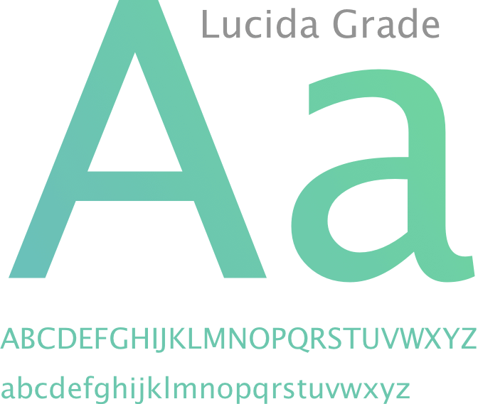
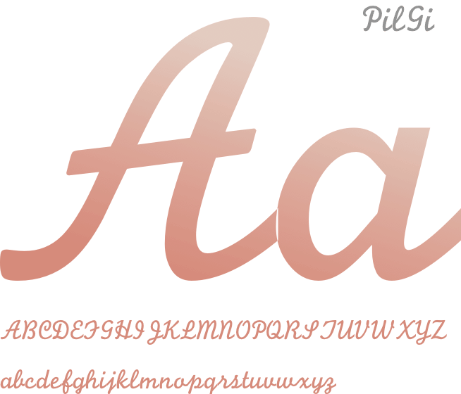
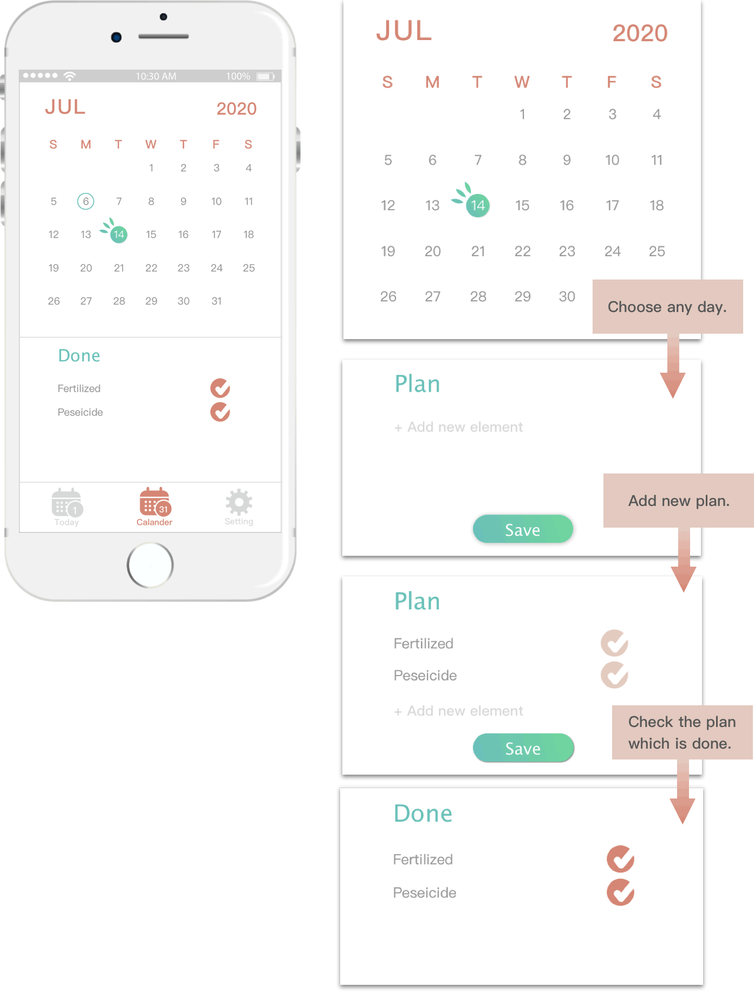
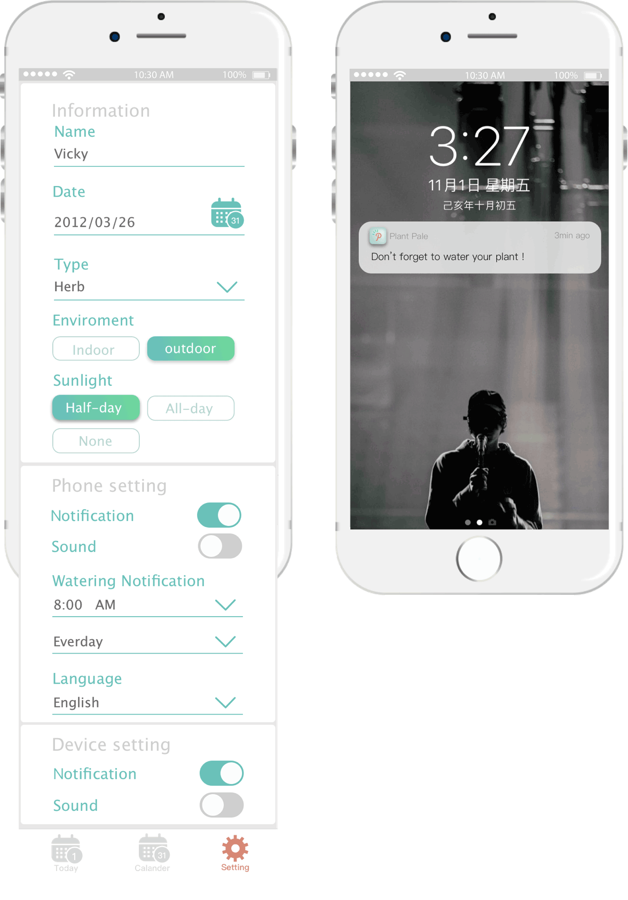

Plant Pale
-----Plant-to-Human Communication APP
Project
Tools
Asia University Talent Youth Design Project (Design Commercialization Bootcamp)
Autodesk Alias / Keyshot / Sketch / Adobe Premiere


Unblock the communication
barrier
between humans and plants.
Electronic curtain
Show different face when the plant in different condition.
Soil sensor
The soil sensor metal can detect soil’s humidity,
temparature and pH.
Therefore, PlantPale will tell
you when to water the planet, when to fertilize.
Speaker
Make sounds when the plant needs your care.
Combine with
User
Flow

Icon List
Primary color
Type Face
 
Device & APP Description


Sign in
Enter the plant’s basic information and planting anviroment,
also take a picture of your plant at the first day for record.
temperature
Soil temperature is the factor that drives germination, blooming, composting,
and a variety of other processes. Learning how to check soil temperature will
help the home gardener know when to start sowing seeds. Knowledge of what
is soil temperature also helps define when to transplant and how to begin a
compost bin. Determining current soil temperatures is easy and will help you
grow a more bountiful and beautiful plant.
Water
Water helps a plant by transporting important nutrients through the plant.
Nutrients are drawn from the soil and used by the plant.
Without enough water in the cells, the plants droop,so water helps a plant stand.
Plantpale make it more easy to monitor the humidity of the plant.
pH
The
desirable pH range for optimum plant
growth varies among
crops. While some crops grow best in the 6.0 to 7.0 range, others grow well
under slightly acidic conditions. Soil properties that influence the need for and
response to lime vary by region. A knowledge of the soil and the crop is
important in managing soil pH for the best plant performance. Fetilized can
interferr the pH, ex. get some lime (CaCO3 or MgCO3) can increase soil pH.
Other
Screens

Dashboard
& album
Calander
Setting / Ｎotification
